Technical art highlights
- Reusable click, drag-and-drop and password components
- Action-tracking branching ending system
- Five-level flow design before implementation
- Bilingual UI for cultural immersion
01Overview
Broken Stage (무너진 무대) is a 2D bilingual (English/Korean) mystery game set in K-pop journalism. As a reporter reopening a buried scandal, you infiltrate an entertainment company, solve room-by-room puzzles and decide whether to publish. Your identity changes the outcome.
I designed and built it solo in Unity: interaction and puzzle systems, the password and ending logic, level flow across five floors, and the UI.
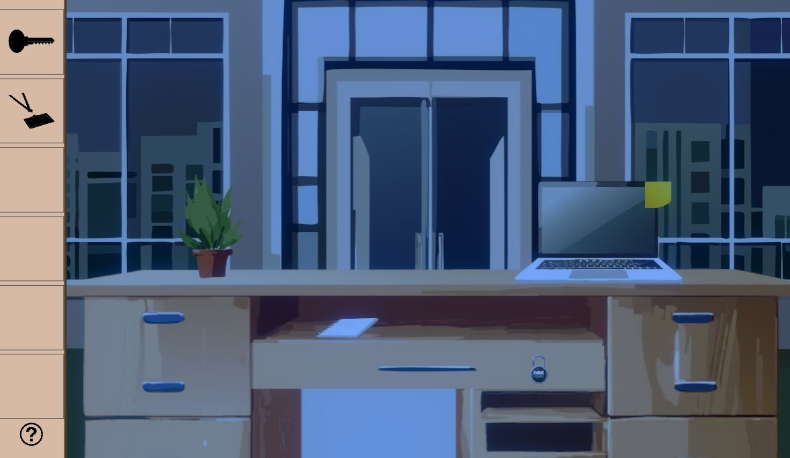
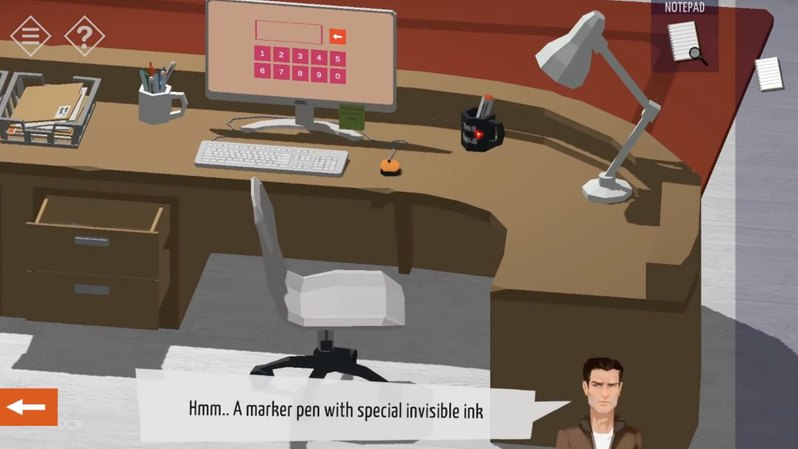
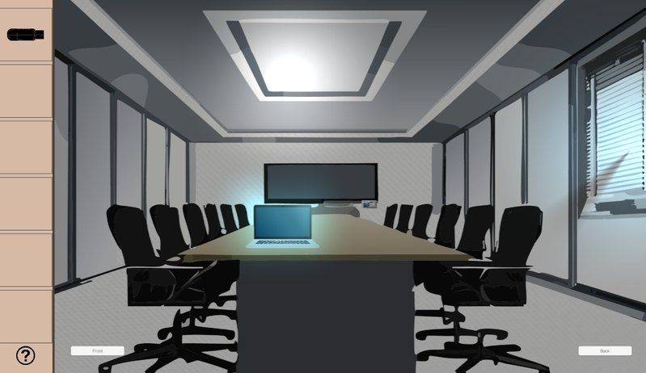
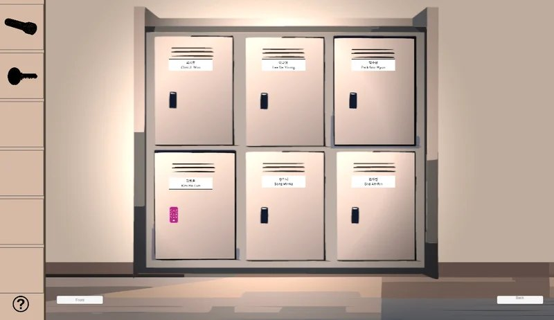
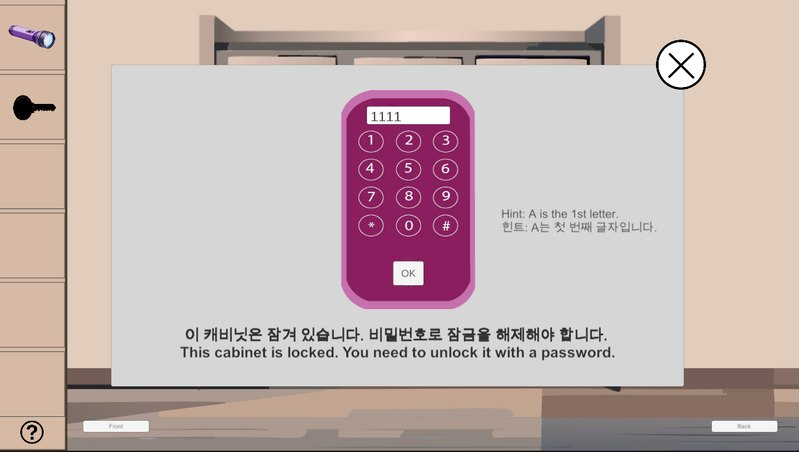
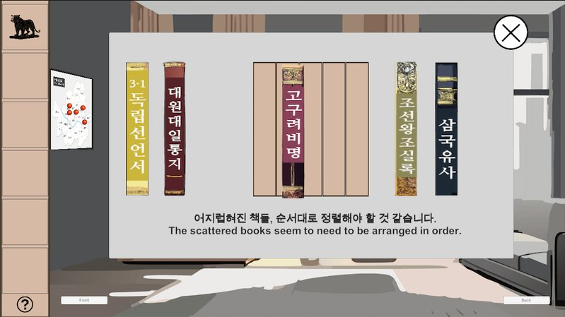
02My contributions
Puzzle & interaction systems
Click-to-inspect, drag-and-drop book ordering, two password input systems, and hidden-item reveals.
Branching endings
An ending manager that tracks player actions (e.g., emails translated) to choose between two endings.
Level flow
Flowcharts for five levels mapping clues, locks and dependencies before building.
Bilingual UI
Mixed English/Korean chats, emails and notes that immerse players in the Korean workplace.
03Systems & code
ClickClicking an object shows detailed information or visuals on a canvas so players can examine clues.
BookOrderingDrag-and-drop books into a sequence. The correct order unlocks a hidden shelf compartment.
PasswordPanel (buttons)Players enter a code by clicking on-screen buttons.
PasswordPanel (keyboard)Players type the password directly with the keyboard.
GameManagerChains all scenes in build order and runs the main menu (Start / Quit).
EndingManagerTracks actions such as translated emails and branches into one of two endings.
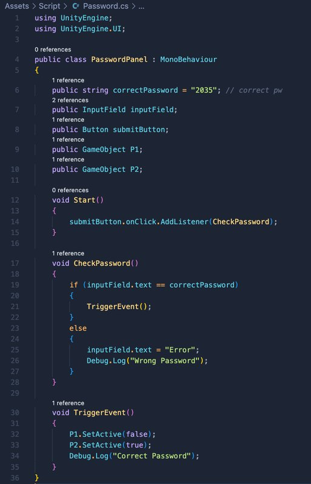
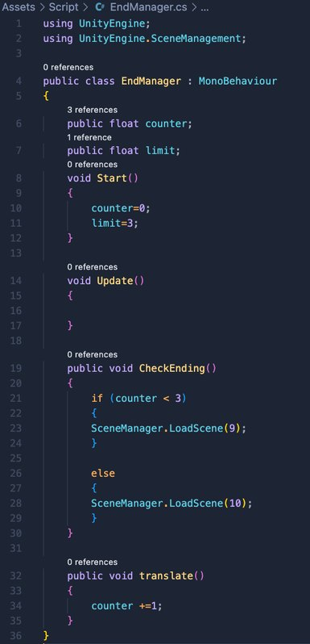
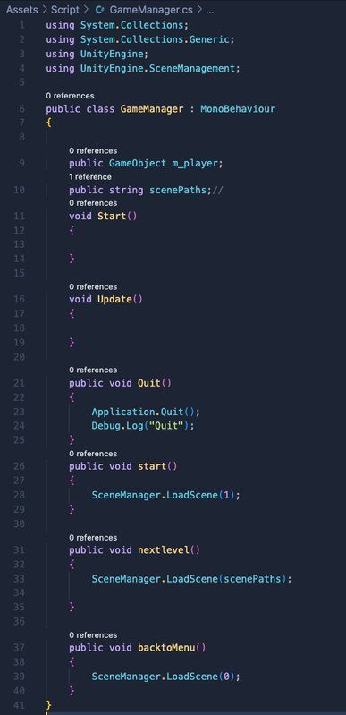
Level flowcharts
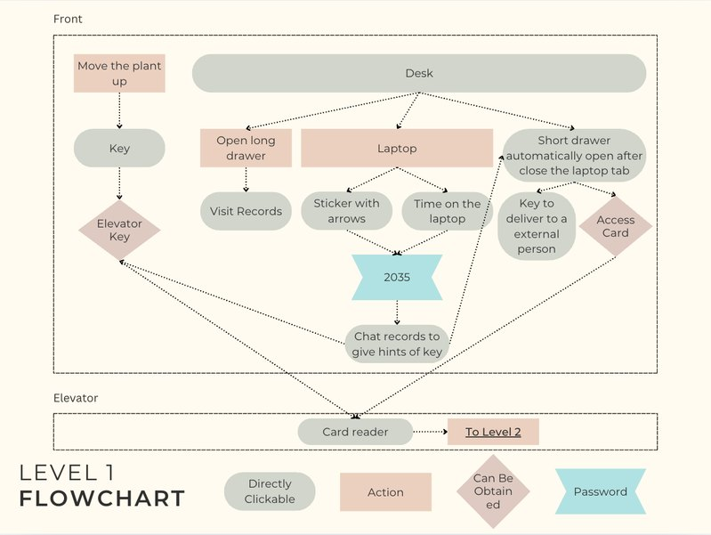
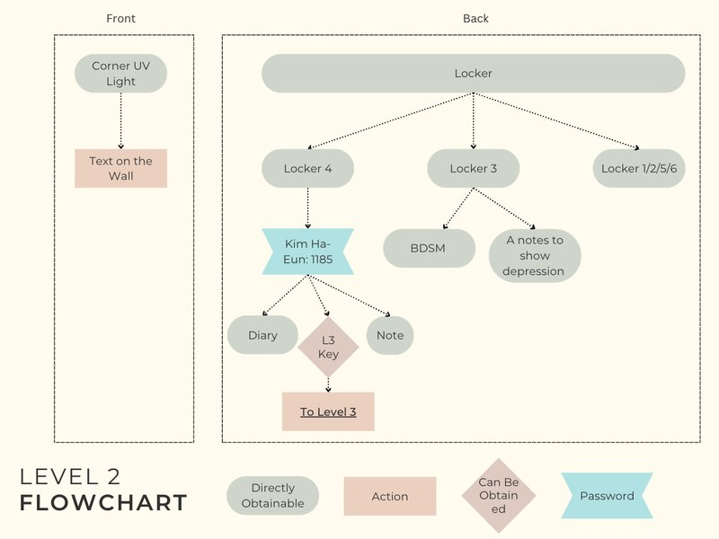
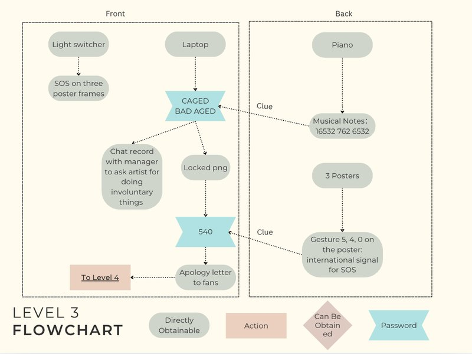
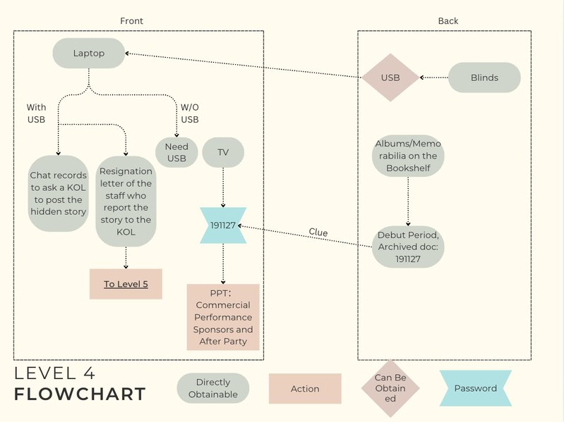
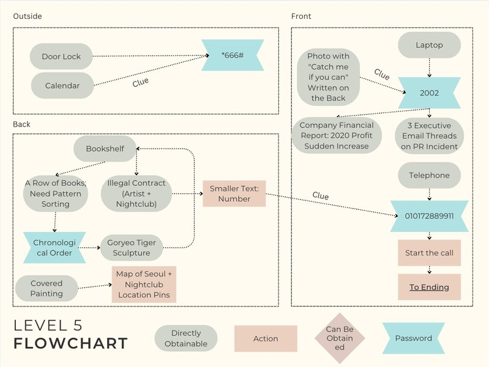
04Challenges & solutions
Replayable puzzles with varied input
Research on replayable escape rooms showed variety keeps players engaged, but each new input type risked one-off code.
Reusable input components
Built button-based and keyboard-based password panels plus a generic click-to-inspect system, reused across rooms.
Endings that reflect player choices
The story’s message depends on the reporter’s identity and actions, not a single final choice.
Action-tracking ending manager
Tracked specific in-game actions and branched to Being Fired or Gain Impacts accordingly.
05Research
The story was informed by real K-pop industry cases, including the Burning Sun scandal and the Jang Ja-yeon and Goo Hara cases. It aims to spark conversation about power, exploitation and the media’s role, using approachable puzzles so players uncover the truth by interacting with it rather than watching it.
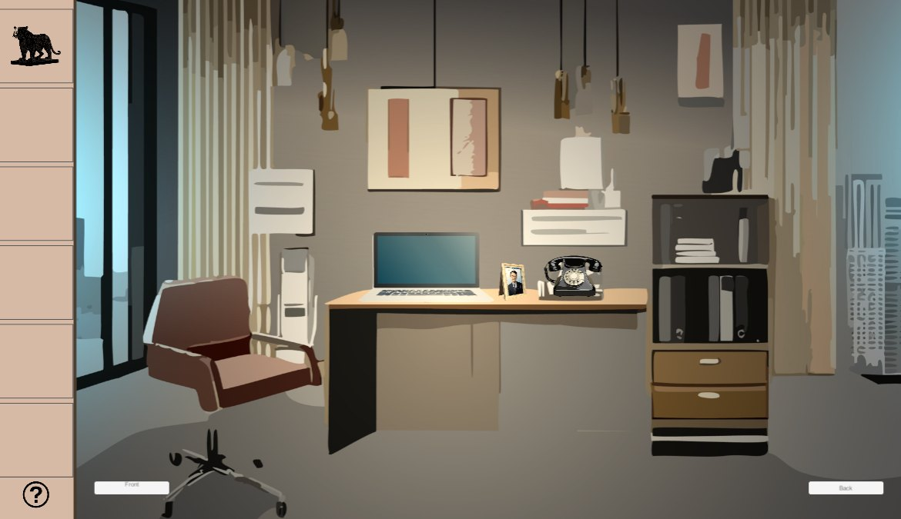
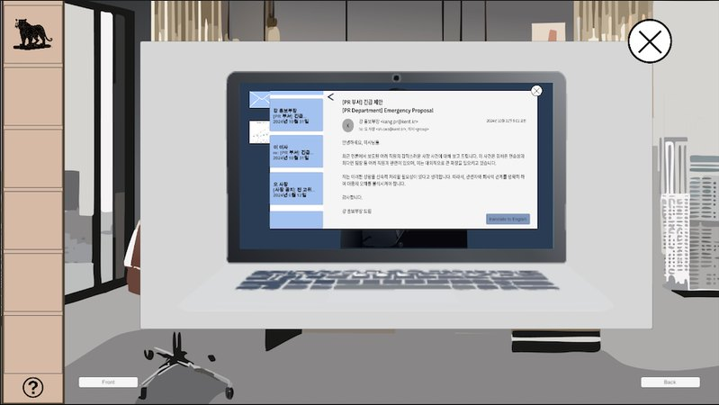
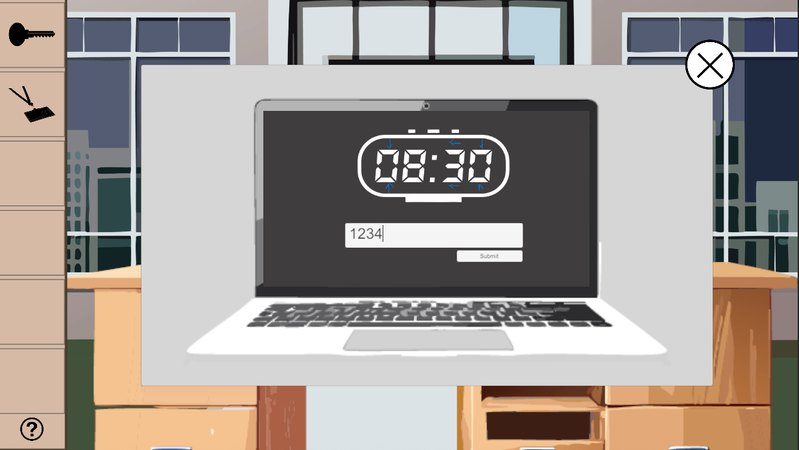
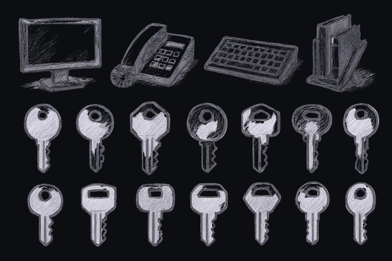